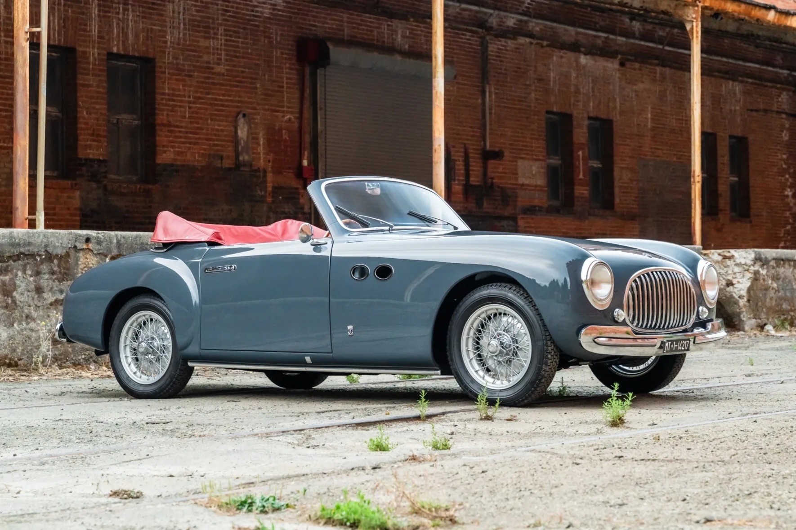
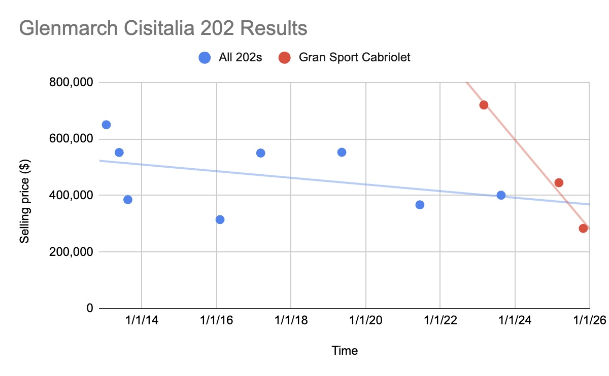
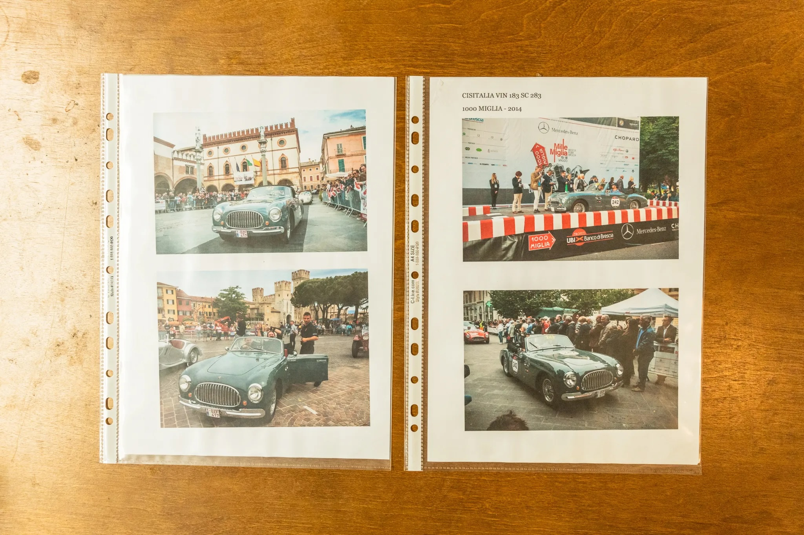
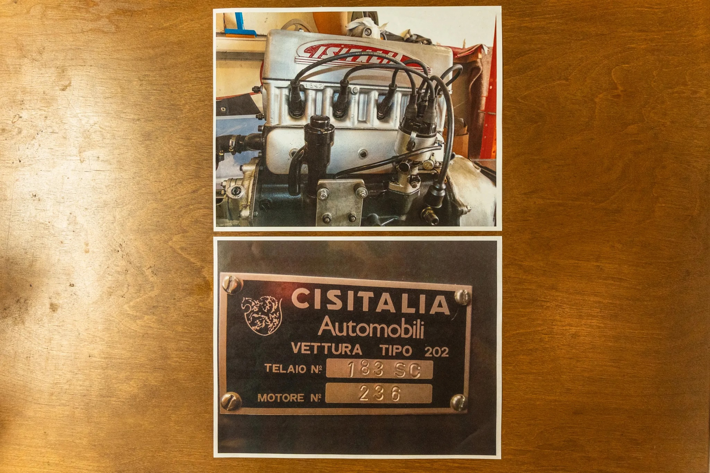
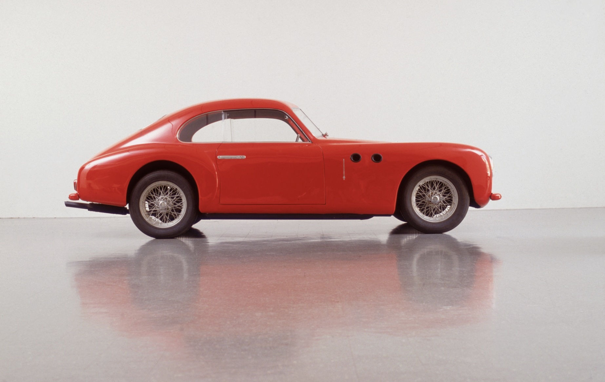
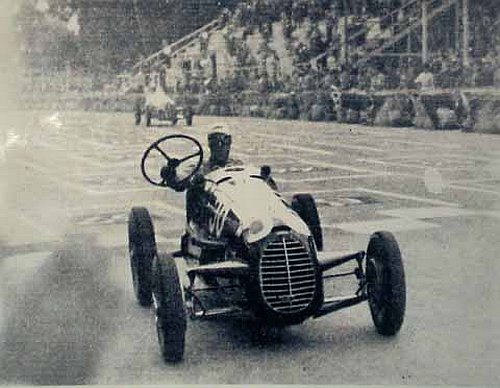

The Generational Change
31 Ottobre 2025
The car market is undergoing a severe generational change. The boomers are phasing out along with everything they loved: rat rods, Plymouth Superbirds, and now this unobtanium Cisitalia. Glenmarch tells me that these cars have been selling for less and less over the last decade. This chart starts with strong sales for the rare and desirable Nuvolari Spider model and ends with a sharp plunge in Gran Sport Cabriolet values.
This example didn’t sell at Gooding earlier this year with an estimate of $400-500k. Now, it didn’t sell on BringaTrailer for just $283,500. The car’s pedigree seems to be spotless: it started life in Austria where it remained until modern times, when it appeared at both Pebble Beach and Villa d’Este back to back. Now, it comes with a FIVA identity card and registration in Mille Miglia 2026.
 Because Cisitalia went bankrupt long before the 1960s heyday of Italian sports cars, the brand doesn’t have any name recognition next to the likes of Ferrari and Maserati. However, it was, historically, very significant: Cisitalia’s doomed Grand Prix project bailed Ferdinand Porsche out of Vichy France jail and set him up to invest in the 356. Furthermore, the 202 was the first car to integrate the hood, fenders, headlights, and the horizontal front grille into a cohesive design, which became the model for not just sports cars but all cars today. In fact, that design is so significant that a 202 is the only car part of the Museum of Modern Art’s permanent collection.
Much like our last article on the Koenig Boxer, this result is reason to celebrate. You can pick up this virtually nonexistent beautiful piece of history for the price of a slightly used GT3 RS. Even more, where I think the Boxer will increase in value as the generational change continues and those kids with Koenig posters on their wall retire with private equity and S&P money in their pockets, these Cisitalias will likely continue to languish. There will be incredible opportunities in the next 10-20 years…
